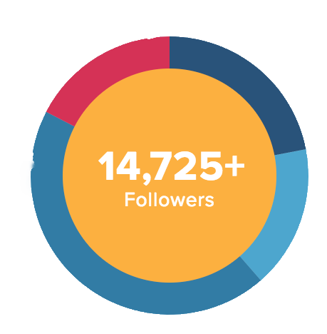

We'll create tailored content and paid ads to propogate your brand.
Got committment problems? We'll take care of those too.

As a digital creative agency, we understand the leveraging power of social media better than most. So enough beating around the bush, let's gettogether! By partnering with us, we'll conduct valuable market research, create rich content, manage ad dollars, and execute scheduled posts on your behalf. It's time to create loyal customers for your brand and we have the roadmap to get there!
As us about networks not shown
We'll create tailored content and paid ads to propogate your brand.
We'll conduct market research to zero in on the right target demographics.

We'll strategically manage your accounts to sustain traiffic and garner trust.
You want proof? You can't handle the proof! But if you can...look no further than the social results we've achieved on our own behalf. After undergoing a rebrand in mid 2013, we essentially hit reset and have been strategically growing our online community. In under a year, we've organically amassed over 9k followers and over $100k in additional social-referred revenue — let us help you do the same!

2,566+ Followers

3,235+ Likes
6,479+ Followers

2,566+ Followers
The difference is in the details. With Brave People as your social media militia, you can expect us to create quality content that's optimized for your audiences based on real analytics — this goes for every post, big or small, textual or visual, still or moving.
(Without Us)
Meetigs all day, so um... yeeaahh - the Intern
#workpostt #overit #underpaidunderappreciated
Like Comment Share
(With Us)
Kicking off a new hump day tradition: Brave Q&A! We get so many emails and DM's with questions about our processes, techniques or simple career advice that we wanted to give you guys a chance to ask away in a rapid fire forum.
Ready, set, ASK!
#bravepeople #wednesdayritual #QandA #photooftheday #vsco
Like Comment Share
Social engagement is a custom process so we’ll discover your needs and create a plan around your specific business goals. To keep it simple, we’re getting down on one knee and proposing more loyal customers for your brand. Schedule your consultation below!